Fractions
Fractional Unit
A fractional unit is each of the parts that are obtained by dividing a unit into equal parts.
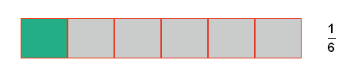
Concept of a Fraction
A fraction is the quotient of two integers, a and b, that are represented in the following form:
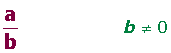
b, denominator: indicates the number of parts that the unit has been divided into.
a, numerator: indicates the number of parts selected.
Representation of Fractions
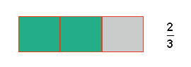
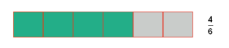
Meaning of the Fraction
The Fraction as Parts of the Unit
The whole is taken as the unit. The fraction expresses a value in relation to everything.
2/3 of a container contains gasoline.
The whole: in this case the whole unit of the container would equal 3/3 if it were full. In general, a whole would be a fraction with the same number in the numerator and denominator.
2/3 of gasoline expresses the relationship between the capacity of the container and the actual amount of gasoline in the deposit at that time. Of the three parts in this case, two are occupied by gasoline.
The Fraction as a Quotient
Distribute $4.00 between 5 friends.
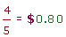
The Fraction as an Operator
To calculate the fraction of a number, multiply the numerator by the number and then divide the result by the denominator.
Calculate the 2/3 of 60.
2 · 60= 120
120 : 3 = 40
The Fraction as a Ratio
When two quantities of magnitude are compared, fractions as ratios are used.
So, when it is said that the proportion of to girls at a school is 3 to 2, it means that for every 3 boys there are 2 girls. In other words, for every five students, 3 are boys and 2 are girls.
A particular case where fractions are implemented as ratios are percentages. This is the relationship of proportionality that reflects an amount between a number and 100. Also, the relationship of proportionality that reflects an amount between a number and 1000 is referred to as, per thousand, and a number and 1 is referred to as, per unit.
Louis buys a shirt with a price tag of $35, however the store manager agrees to award him a discount of 10% off the regular price. How much will he pay for the shirt?.
35 · 10 = 350
350 : 100 = 3.5
35 − 3.5 = $31.50
Types of Fractions
Proper Fractions
A proper fraction is one whose numerator is less than the denominator. Its overall value is between zero and one.
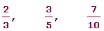
Improper Fractions
An improper fraction is one whose numerator is greater than the denominator. Its overall value is greater than one.
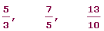
To convert an improper fraction to a mixed number, divide the numerator by the denominator. The quotient then becomes the integer of the mixed number and the remainder becomes the numerator of the fraction. The denominator remains the same.
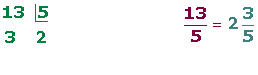
Decimal Fractions
The decimal fractions have a power of 10 in the denominator.
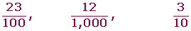
Equivalent Fractions
Two fractions are equivalent when the product of its extremes is equal to the product of its means.
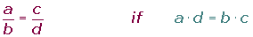
a and d are the extremes; b and c, are the means.
Determine whether the following fractions are equivalent:
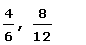
4 · 12 = 6 · 8 48 = 48 Yes
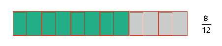
If the numerator and denominator of a fraction are multiplied by an integer not including zero, the result is equivalent to the original fraction.
In the first case, it is called extended or amplified.
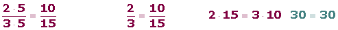
Simplifying Fractions
Simplifying or reducing a fraction is transforming it into a simpler, equivalent fraction.
To simplify a fraction, divide the numerator and the denominator by the same number.
In order to determine what number to divide by, first find the prime numbers of both the numerator and denominator: 2, 3, 5, 7, ... In other words, try to divide the numerator and denominator by a number divisible by both.
The process is repeated until there is no more common divisors.
If the terms of the fraction end up in zeros, begin by removing the final common zeros of the numerator and denominator.
If the number for which the numerator and denominator are divided by is the greatest common divisor of both, an irreducible fraction is reached.
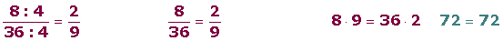
Irreducible Fractions
The irreducible fractions are those that cannot be simplified any further. This happens when the numerator and denominator are both coprime.
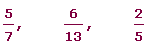